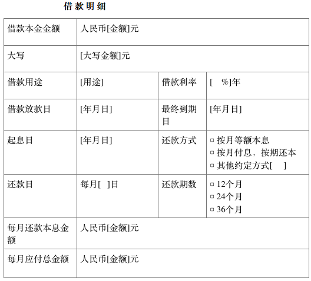

-
第一条 定义
- 借款人是指为符合中华人民共和国法律（以下简称“中国法律”，不包括香港特别行政区、澳门特别行政区和台湾省的法律法规）规定的具有完全民事权利能力和民事行为能力，独立行使和承担本合同项下权利义务的自然人或为按照中国法律合法设立并有效存续的个体工商户、企业法人或其他组织。借款人为“居间人”（即“前海新创互联网金融”）的注册用户。
- 出借人是指为符合中国法律规定的具有完全民事权利能力和民事行为能力，独立承担本合同项下权利义务的自然人。在特定情况下，借款转让后的出借人可能是符合中国法律规定的企业法人或个体户或其他组织。出借人必须为前海新创互联网金融的注册用户。
- 居间人是指拥有前海新创互联网金融 （网址：CCCCCCC）的经营权，能获取投融资信息，并能提供投融资居间撮合、管理等服务的有限责任公司。
- 第三方支付机构：与前海新创互联网金融合作的支付机构。
- 本合同项下借款人、出借人和居间人单独称“一方”，合称“各方”。
以上各方本着实事求是、平等互利、共同发展的原则，就借款人通过前海新创互联网金融向出借人申请借款事宜，借款人及出借人应仔细阅读本合同的所有条款， 借款人提出申请、出借人投标后即视为已接受本合同所有条款。请务必审慎阅读、充分理解各条款内容，特别是免除或限制责任条款、法律适用和争议解决条款。免除或限制责任条款将以粗体下划线标识，应重点阅读。
-
二.借款

注：以上借款信息中列明的借款放款日根据实际放款日进行调整（其他相关日期相应调整）；借款利率、每月具体还款本息金额等可能因借款期数不同而发生变化，但借款利率不因国家利率政策变化而调整。借款人、出借人委托居间人对相关金额进行计算，并在前海新创互联网金融发布或更新具体的还款明细。上述还款明细中列明的每月还款本息金额若与前海新创互联网金融发布或更新的还款明细不一致的，以居间人在前海新创互联网金融上发布或更新的还款明细为准。
- 借款金额是指“借款明细”中列明的借款本金金额。借款币种为人民币。
- 借款期限是指自借款放款日起至最终到期日（全部借款到期日）止的期间。
- 借款用途是指“借款明细”中列明的借款用途。借款用途可为购物消费、教育培训、旅游、医疗、车辆购置、房屋装修等，但不可用于股票投资、场外配资、期货合约、结构化产品及其他衍生品等高风险投资。
- 借款利率是指“借款明细”中列明的借款利率，为起息日当日中国人民银行同档同期人民币贷款基准利率的[ %]，以年利率的方式表示。月利率=年利率/12，日利率=年利率/360。
- 借款放款日是指“借款及明细”中列明的借款放款日，为出借人之借款成功发放之日。
- 起息日是指“借款及担保明细”中列明的起息日，为出借人的借款放款日起第2日（含借款放款日当日）。
- 还款日是指“借款明细”中列明的还款日，为借款人每月还本付息的日期；如当月无该日期，则以当月的最后一日为还款日。最后一期的还款日为借款的最终到期日。如还款日为法定假日或公休日，还款日不顺延。
- 工作日是指前海新创互联网金融的正常营业日（不包括中国的法定公休日和节假日）。
- 本合同项下借款按月结息，结息日分别为各还款日的前一日。最后一期的结息日为借款的最终到期日。借款期限中首月与末月不足1个月的，则利息按实际天数计息，一年按360日计；借款期限其余期限，利息按月计息，借款月利率按照本合同第三条确定。
- 出借人通过前海新创互联网金融以网络在线点击确认的方式接受本合同后，即不可撤销地授权前海新创互联网金融委托的第三方支付机构将金额等同于“借款明细”中列明的借款本金金额的资金由出借人前海新创互联网金融用户名项下账户（“出借人前海新创互联网金融账户”）划转至借款人前海新创互联网金融用户名项下账户（“借款人前海新创互联网金融账户”）中，划转完毕即视为借款发放成功。
- 基于居间人向借款人提供与个人借款的居间撮合服务，借款人应向居间人支付该等服务费，出借人应向居间人支付服务费。具体收费及费用划扣方式见前海新创互联网金融发布的相关规则。对此，借款人同意并授权前海新创互联网金融委托的第三方支付机构从借款人前海新创互联网金融账户内扣收该等服务费，出借人同意并授权前海新创互联网金融委托的第三方支付机构从出借人前海新创互联网金融账户内扣收该等服务费。如前海新创互联网金融委托的第三方支付机构未能从借款人或出借人的前海新创互联网金融账户中扣收该等服务费的，借款人或出借人仍应承担向居间人付款的义务。
-
三.还款
- （一）借款人还款义务
- 借款人应按时足额向出借人支付本金和利息；
- 如发生逾期还款，借款人需按本合同约定向出借人支付逾期罚息；
- 如发生提前还款，借款人需按本合同约定向出借人支付提前还款手续费；
- 借款人需按本合同约定向居间人支付服务费。
借款人应归还的上述款项统称为“应付款项”。
- 出借人每月回收金额、利息等如下：
- 出借人每月回收金额=[本金*月利率*（1+月利率）^还款月数]/[（1+月利率）^还款月数-1]；
- 还款周期为M个月，则第N月回收本金=[本金*月利率*（1+月利率）^(N-1)]/[（1+月利率）^M-1]
注：每月还款金额按照四舍五入法保留整数部分计算
- 出借人当月回收利息=当月回收金额-当月回收本金。
- 借款人应在还款日支付当期应付款项。
- 借款人可以选择通过手动还款方式或系统自动还款方式支付其到期应付款项。
- 借款人手动还款是指借款人通过前海新创互联网金融的“手动还款”功能，将借款人前海新创互联网金融账户中的资金划转至出借人前海新创互联网金融账户的还款方式。借款人使用手动还款时，借款人前海新创互联网金融账户中必须有足额资金。若借款人前海新创互联网金融账户余额不足以支付当期应付款项而导致划转失败的，因此造成的后果由借款人自行承担。
- 系统自动还款是指借款人通过前海新创互联网金融的“系统自动还款”功能，不可撤销地授权前海新创互联网金融委托的第三方支付机构按照下述方式和时间直接划转（代扣）借款人的资金并划转至出借人前海新创互联网金融账户的还款方式：
- 正常还款：借款人不可撤销地授权前海新创互联网金融委托的第三方支付机构于还款日从借款人前海新创互联网金融账户中将借款人的资金划转至出借人前海新创互联网金融账户；当借款人前海新创互联网金融账户中的资金余额不足时，借款人不可撤销地授权前海新创互联网金融委托的第三方从借款人指定的银行还款账户（“借款人银行还款账户”）中代扣差额（应付款项与借款人前海新创互联网金融账户中余额之差）。若借款人银行还款账户的余额小于前述差额，前海新创互联网金融委托的第三方支付机构有权对借款人银行还款账户的余额进行全额扣款或视为委托还款不成功。为避免委托还款不成功，借款人应至少在还款日前二日，将资金存入借款人前海新创互联网金融账户或指定的银行账户中；因借款人未足额存入资金导致委托还款不成功的，后果由借款人自行承担。
- 重复还款：当借款人已经通过前海新创互联网金融“系统自动还款”功能还款之后，借款人又通过“手动还款”的方式还款的，可能造成重复还款。发生借款人重复还款的，以“手动还款”为准。各方同意并不可撤销地授权前海新创互联网金融委托的第三方支付机构将前述“委托还款”中已代扣的资金划转至借款人前海新创互联网金融账户。
- 借款人通过“手动还款”方式还款的，资金到达出借人前海新创互联网金融账户之日为归还日期；借款人通过“系统自动还款”方式还款成功的，前海新创互联网金融委托的第三方支付机构发起划扣指令之日为归还日期。
-
第四条 逾期还款
- (二)逾期还款
- 还款日24点前，借款人未足额支付应付款项的，则视为逾期。
- 若借款人未依照合同约定按时足额支付应付款项，则居间人可宣布本合同项下的借款本息全部提前到期并要求借款人提前清偿所有应付款项以及逾期违约金。借款人应按照未还款金额（包括本金和利息）1‰/日的标准向出借人支付逾期违约金并按未支付服务费的1‰/日的标准向居间人支付逾期违约金，直至偿还所有应付款项及逾期违约金。
- （1）借款人在本合同有效期内，不能依照本合同规定履行按时、足额支付应付款项，致使出借人或居间人决定通过其他途径采取补救或追索措施的，由此引起的一切费用均由借款人承担（包括但不限于诉讼/仲裁费用、律师费用、评估费、保全费、担保费、委托外部催收机构催收费、交通费、差旅费、调查取证费及其他实现债权所产生的费用等）。
- （2）借款人不可撤销地授权前海新创互联网金融委托的第三方在借款人未能按时足额支付应付款项的情况下，在借款人全部到期应付款项的范围内，随时划扣借款人前海新创互联网金融账户及其指定银行账户中的资金用于归还借款人到期应付款项，该等划扣无需借款人另行同意。
- （3）如借款人的还款金额不足以足额清偿全部到期应付款项的，借款人应按如下顺序支付应付款项：A. 服务费；B. 截止到该还款日的逾期罚息；C. 利息；D. 本金。
- （三）提前还款
- 借款人可于起息日起至最终到期日前倒数第二个月的还款日止的期间内，通过前海新创互联网金融的“提前还款”功能向出借人、前海新创互联网金融申请提前偿还全部应付款项。借款人不得提前偿还部分应付款项。
借款人提前还款的，应事先在借款人前海新创互联网金融账户中存入足额资金，并按下列顺序足额清偿应付款项：
（1） 向居间人支付所有尚未支付的服务费；
- 按下列顺序向出借人支付尚未支付的应付款项：A.利息；B.剩余本金； C. 提前还款手续费。
- ①若借款人存在逾期还款时申请提前还款的，应先支付结清所有逾期款项后方可提前还款。
- ②剩余本金是指所有尚未支付的借款本金。当提前还款日为还款日时，剩余本金不包括当期应付本金（为免异议，当提前还款日为还款日时，应不影响借款人在还款日归还应付款项）；当提前还款日为非还款日时，剩余本金包括当期应付本金。
- ③提前还款手续费的收费标准为：借款初始本金1.0%的费用。该手续费在借款人申请提前还款时，由居间人委托的第三方支付机构一次性划扣。提前偿还本金、利息及出借人应当收取的提前还款手续费（各出借人根据其出借初始金额所占借款初始本金的百分比，同比例收取手续费），借款人授权居间人委托的第三方支付机构向出借人支付上述款项。
前海新创互联网金融另行发布的借款规则中对提前还款手续费另行约定的，各方同意以另行发布的借款规则为准。
- (四）缔约过失赔偿金
借款人通过网站开始募集借款后，应依约进行，不得中途宣布终止/中止借款，否则借款人应承担缔约过失责任，需按照借款总额2.0%的标准向居间人支付缔约过失赔偿金。
第四条 借款的转让
- 各方同意并确认，出借人可将本合同项下的全部或部分借款债权（“借款债权”）转让予第三人，但该等第三人必须为在前海新创互联网金融的注册用户，《中华人民共和国继承法》另有规定的除外。
- 各方同意并确认，若出借人转让其借款债权的，出借人授权授权前海新创互联网金融视情况(在必要时)将借款债权转让交易通知借款人。前海新创互联网金融应当以书面形式（包括但不限于电子邮件等方式）作出关于借款债权转让交易的通知，该等通知构成合法、有效的债权转让通知；且一经作出，相关债权转让即对借款人发生法律效力。
- 出借人根据本合同转让借款债权的，除下述内容变更外，本合同项下其他条款不受影响，且变更内容对借款人仍有约束力：
- （1） 借款债权全部转让的，本合同项下的提供借款的一方变更为债权受让人。
- （2） 借款债权部分转让的，本合同项下的提供借款的一方变更为出借人和债权受让人，且出借人和债权受让人借出的本金应相应调整。
- 各方同意并确认：借款债权必须通过前海新创互联网金融的“借款转让”功能进行转让或委托前海新创互联网金融通过其他方式进行。
- 在出借人的债权转让后，借款人需对新债权人继续履行本合同下其对出借人的所有义务，不得以未接到债权转让通知为由拒绝履行还款义务。
-
第五条 特别条款
- 借款人和出借人各自在此确认为具有完全民事权利能力和完全民事行为能力的自然人或为按照中国法律合法设立并有效存续的企业法人或其他机构，有权签订并履行本合同。
- 借款人和出借人均认可居间人提供的前海新创互联网金融网站cccccc (以下简称"前海新创互联网金融")，自愿申请注册成为前海新创互联网金融的网络用户，并认可和遵守前海新创互联网金融的经营模式及交易规则，同意和接受居间人制定的前海新创互联网金融网站服务规则及在网站发布的所有条款和其他规则声明等，该规则和声明是本合同的附件，与本合同具有同等的法律效力；
若网站发布的规则和条款与本合同不一致的，则以本合同为准。
- 出借人保证：出借人为前海新创互联网金融注册用户并在本合同有效期内保持前海新创互联网金融注册用户身份；出借人向借款人提供的资金来源均合法。
- 借款人应根据前海新创互联网金融的不时要求如实向出借人、前海新创互联网金融提供个人情况（包括但不限于姓名、身份证号、学历、联系方式、联系地址、职业信息、联系人信息等）以及借款用途等相关信息。借款人承诺并保证其向出借人、前海新创互联网金融提供的所有信息均为真实、完整和有效的。
- 借款人承诺：如发生任何影响或者可能影响借款人经济状况、信用状况、还款能力的事由，包括但不限于借款人的工作单位、职位、工作地点、薪酬等事项的变化，借款人应于前述变更发生之日起2个工作日内通知前海新创互联网金融。
- 借款人承诺根据本合同列明的借款用途使用借款资金，并保证不挪用借款资金或将借款资金用于以下目的和用途：
- 以任何形式进入证券市场，或用于股本权益性投资；
- 用于房地产项目开发；
- 投资股票、场外配资、期货合约、结构化产品及其他衍生品等高风险的融资；
- 用于国家明令禁止或限制的经营活动。
- 各方承诺，各方不会利用前海新创互联网金融进行信用卡套现、洗钱、非法集资或其他不正当交易行为，否则应依法独立承担法律责任。
- 借款人和出借人一致同意委托并授权居间人及与前海新创互联网金融合作的第三方支付机构依照前海新创互联网金融发布的各项规则、合同、条款及声明，对本合同项下借款所涉及的各类电子合同和纸质合同的管理、信息的公告与发布、借款款项的协助划付、结算，居间人委托第三方支付机构对双方账户资金的代管、代收、代付等，借款人和出借人对居间人的上述行为均明确知悉并不持任何疑义，愿意承担由此居间行为所可能产生的一切法律后果。
- 借款人和出借人确认，居间人仅系促成双方达成借款交易的网络交易服务中间平台，并为双方的交易便利提供中介服务，借款人和出借人通过网站提供的各方自行拥有的在线账户以及银行账户进行交易的一切法律后果均由各方自行承担，与居间人无关，居间人对此不承担任何法律责任。
- 1各方确认，借款人和出借人授权和委托前海新创互联网金融根据本合同所采取的全部行动和措施的法律后果均归属于借款人和出借人本人；在任何情形下，前海新创互联网金融不是本合同项下任何借款或债务的债务人或需要以其自有资金偿还本合同项下的任何借款或债务。前海新创互联网金融亦不是本合同项下担保的担保人或需要以其自有资金承担本合同项下的担保责任。
-
第六条 违约
- 借款人未经出借人共同同意，擅自转让本合同借款债务的，借款人应向出借人支付借款本金金额10%的款项作为不如实告知违约金；同时，一经发现，出借人即有权要求前海新创互联网金融委托的第三方支付机构将借款人前海新创互联网金融账户及借款人银行还款账户中的资金直接划扣至出借人前海新创互联网金融账户用以支付该违约金。
- 发生以下一项或几项情形的，视为违约：
（1）借款人违反本合同的任一规定；
（2）出借人违反本合同的任一规定；
（3）借款人或出借人借助前海新创互联网金融从事非法活动；
（4）借款人或出借人违反前海新创互联网金融发布的各项规则和程序进行操作；
（5）借款人拒不配合居间人对其借款使用情况和经营情况进行的监督和调查；
（6）借款人为逃避债务，恶意转移资产或放弃、减免对第三方的债权；
发生影响合同履行能力的重大事件，包括但不限于重大经济纠纷、财务状况恶化等，借款人未及时书面通知居间人；
（7） 借款人的财务状况出现影响其履约能力的不利变化，且不能及时提供有效补救措施的；
（8） 借款人的任何财产遭受没收、征用、查封、扣押、冻结等可能影响其履约能力的不利事件，且不能及时提供有效补救措施的；
（9）借款人被依法追究刑事责任或被依法受到其他强制措施或被有关机关采取了限制其某项权利的措施，影响其履行本合同义务的。
- 3. 若借款人违约或根据出借人合理判断借款人可能发生违约事件的，出借人（委托前海新创互联网金融）有权采取下列任何一项或几项救济措施：
（1） 立即暂缓、取消发放全部或部分借款；
（2） 宣布已发放借款全部提前到期，借款人应立即偿还所有应付款项；
（3） 解除本合同；
（4） 采取法律、法规以及本合同约定的其他救济措施。
除以上救济措施外，出借人还有权要求借款人赔偿因违约造成的直接及间接损失。
- 若借款人或出借人违反合同的规定，视为对居间人的违约，居间人有权根据本合同及前海新创互联网金融发布的规则，针对违约的程度采取以下一种或数种措施：
（1）要求借款人支付本合同借款金额2.0%的违约金（包括但不限于合同第三条第二款、第三条第三款、第六条第一款所列的违约金）。
（2）有权对注册的前海新创互联网金融用户采取部分网络权限限制。
（3）冻结借款人或出借人的前海新创互联网金融账户内资金。
（5）若借款人逾期还款，居间人有权将借款人列入前海新创互联网金融“逾期还款黑名单”，并将借款人违约失信的相关信息及其他信息向包括但不限于媒体、用人单位、公安机关及有关逾期款项催收服务机构披露。对此居间人不承担任何责任。
（6）暂停对借款人的借款资格，直至作销户处理。
（7）依照网站发布的规则进行其他处理行为。
除以上救济措施外，居间人还有权要求借款人或出借人赔偿因违约所造成的直接及间接损失。
-
第七条 证据和计算
本合同各方确认并同意，前海新创互联网金融对本合同项下的任何金额进行计算；在无明显错误的情况下，前海新创互联网金融对本合同项下任何金额的任何证明或确定，应作为该金额有关事项的终局证明。
-
第八条 保密条款
- 本合同签署后, 除非事先得到另两方的书面同意, 本合同各方均应承担以下保密义务：
1） 任何一方不得向非本合同方（前海新创互联网金融除外）披露本合同以及本合同项下的事宜以及与此等事宜有关的任何文件、资料或信息（“保密信息”）；
2） 任何一方只能将保密信息和其内容用于本合同项下的目的, 不得用于任何其他目的。本款的约定不适用于下列保密信息：
A. 从披露方获得时，已是公开的；
B. 从披露方获得前，接受方已经获知的；
C. 从有正当权限并不受保密义务制约的第三方获得的；
D. 非依靠披露方披露或提供的信息独自开发的。
- 本合同各方因下列原因披露保密信息，不受前款的限制：
（1） 向本合同各方的董事、监事、高级管理人员和雇员及其聘请的会计师、律师、咨询公司披露；
（2） 因遵循可适用的法律、法规的强制性规定而披露；
（3） 依据其他应遵守的法规向审批机构和/或权力机构进行的披露。
- 借款人和出借人提供给前海新创互联网金融和担保公司的信息及借款人和出借人享受前海新创互联网金融或担保公司服务产生的信息（包括本合同签署之前提供和产生的），可由前海新创互联网金融和担保公司共享，法律禁止的除外。
- 本合同任何一方应采取所有其他必要、适当和可以采取的措施，以确保保密信息的保密性。
- 本合同各方应促使其向之披露保密信息的人严格遵守本条约定。
- 各方在本条项下的权利和义务应在本合同终止或到期后继续有效。
-
第九条 通知
- 本合同任何一方根据本合同约定做出的通知和/或文件均应以书面形式做出，可由专人送达、挂号邮递、特快专递或通过前海新创互联网金融网络平台发布等方式传送。
- 通知在下列日期视为送达：
（1） 专人递送的通知，在专人递送之交付日为有效送达；
（2） 以挂号信（付清邮资）发出的通知，在寄出（以邮戳为凭）后的五（5）个工作日内为有效送达；
（3） 以特快专递（付清邮资）发出的通知，在寄出（以邮戳为凭）后的三个工作日内为有效送达；
（4） 以传真或电子邮件发出的通知，在电子信息反馈为送达后一个（1）工作日内为有效送达；
（5） 通过前海新创互联网金融网络平台发布的方式通知的，在前海新创互联网金融网络平台发布之日为有效送达。
-
第十条 法律适用和管辖
本合同的签订、履行、终止、解释均适用中国法律。各方同意，因本合同所产生的或与本合同有关的一切争议，各方应协商解决；协商无法达成一致的，各方一致同意将争议提交至合同签订地人民法院。
-
第十一条 其他
1. 本合同项下各方同意并承诺，本合同项下各方提供的信息均应在提供给本合同其他各方的同时提供给前海新创互联网金融。本合同各方授权前海新创互联网金融根据本合同任意一方的合理要求向其提供本合同各方向前海新创互联网金融提供的所有信息。
2. 借款人、出借人均同意并确认，借款人、出借人通过其前海新创互联网金融账户和银行账户采取的行为所产生的法律效果和法律责任归属于借款人本身、出借人本身；借款人、出借人授权和委托前海新创互联网金融和前海新创互联网金融委托的第三方支付机构根据本合同所采取的全部行动和措施的法律后果均归属于借款人本身、出借人本身，与前海新创互联网金融或前海新创互联网金融委托的第三方支付机构无关，前海新创互联网金融或前海新创互联网金融委托的第三方支付机构也不因此承担任何责任。借款人和出借人同意，前海新创互联网金融有权就其为借款人和出借人提供的平台服务收取服务费。
3. 本合同中部分条款根据相关法律法规等的规定成为无效，或部分无效时，该等无效不影响本合同项下其他条款的效力，各方仍应履行其在本合同项下的义务。
4. 自借款划转至借款人的指定收款账户时，本合同正式生效。
5. 本合同项下的附件和补充合同构成本合同不可分割的一部分。
6. 各方确认，各方自行保管在前海新创互联网金融注册的账户信息及密码，同时该账户为各自资金管理账户。若有遗失，应及时书面通知居间人。各方承诺自行操作自己的账户，由此所产生的一切后果自行承担。
7. 如各方采用电子方式签署本协议，各方应向居间人推荐的第三方认证机构申请数字证书，用于签署本协议及各方申请数字证书服务视为各方理解并同意使用该数字证书签署本协议的行为具有完全的法律效力。
8. 本合同通过网站正常操作后，自动生成电子合同，为各方同意和认可。自动生成的电子合同文本为各方真实意思表示，对各方均具有法律约束力。电子合同与纸质合同具有同等法律效力。
 投资协议
投资协议